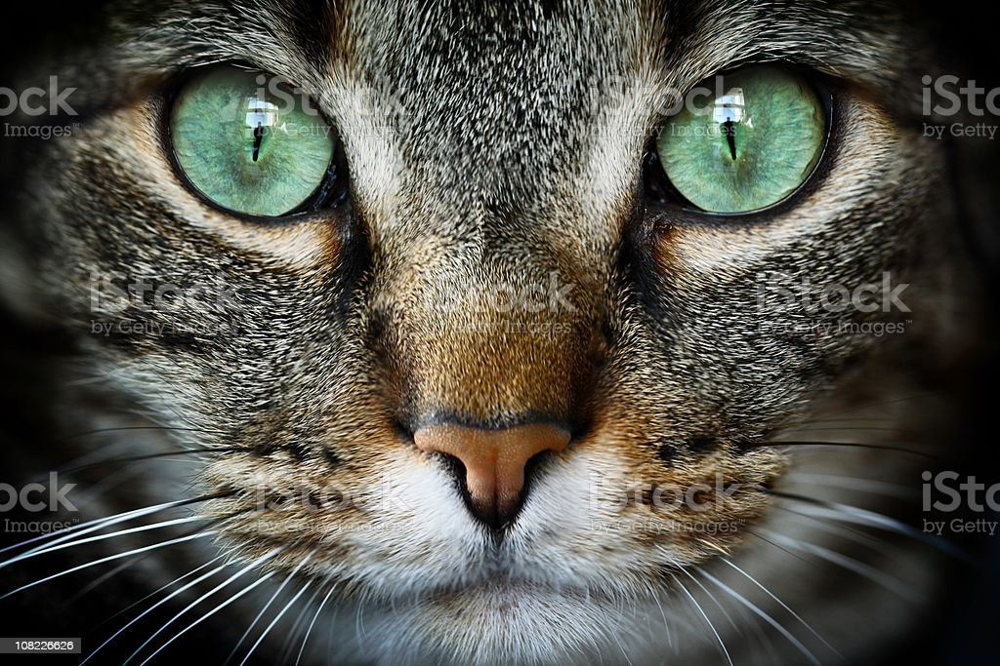

Article about cats
link1
link2
As anyone who has spent time with cats knows, our feline companions are mysterious—much more so than those other furry family members. Here John Bradshaw, author of Cat Sense (Basic Books, 2013), fields a selection of questions submitted by Scientific American editors and Twitter followers about the cat’s many quirks. Bradshaw is a visiting fellow at the University of Bristol School of Veterinary Sciences in England, where he studies the behavior and welfare of cats and dogs, as well as their interactions with people.
